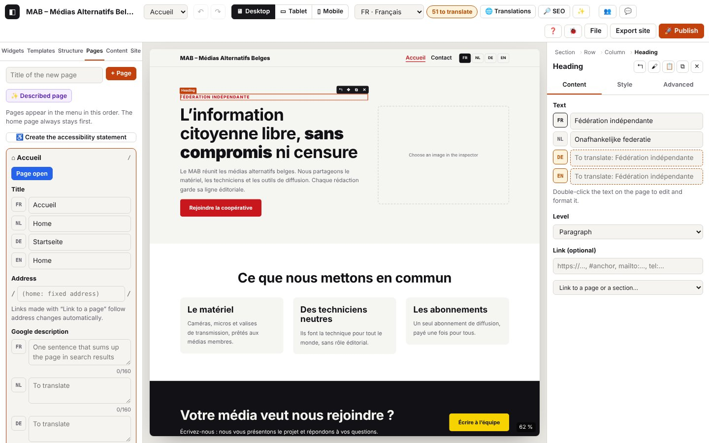

4. Pages, site settings, images, collections, versions

On this page
- 4.1 Create a page
- 4.2 Change a page’s address
- 4.3 Title and Google description
- 4.4 Page order, footer link, opening a page
- 4.5 Delete a page
- 4.6 Customise the menu
- 4.7 Create the accessibility statement
- 4.8 Site name and address
- 4.9 Site languages
- 4.10 Colours, fonts, scales, header and footer
- 4.11 Header and footer in blocks
- 4.12 Manage presets
- 4.13 Import an image
- 4.14 Image refused, unreadable or heavy
- 4.15 Site logo
- 4.16 Create a collection
- 4.17 Open a collection
- 4.18 Add and edit items
- 4.19 A collection’s fields
- 4.20 A collection’s settings: name, address, detail page, RSS, events, order
- 4.21 Edit the card and the detail page
- 4.22 Delete a collection
- 4.23 Export the items as CSV
- 4.24 Import a CSV
- 4.25 Automatic version of the day
- 4.26 Save a version
- 4.27 Restore a version
- 4.28 Delete a version
- 4.29 Version storage errors
- 4.30 Setting up a content list (upcoming events, the three latest news items…)
- Codes in this chapter
The log extracts below were captured in French; codes and levels are identical in every language (the messages in your log are in the interface language).
This chapter covers everything that organises the site: its pages and its menu, the general settings (Site panel), imported images, repeated content (collections: member media, news, events), importing and exporting them as CSV, and the project’s versions.
Log domains
page.*: Pages panel (create, address, title, description, order, deletion), menu (page.menu.*), accessibility statement (page.a11y.*).settings.*: Site panel (name, address, languages, palette, fonts, scales, header, footer, logo, presets).image.*: conversion of imported images (WebP, variants, weight, errors).collection.*: Content panel and a collection’s window (items, fields, settings, card, detail page, CSV).version.*: Project versions window (save, restore, delete, automatic clean-up).- Lines from other domains you will come across here:
store.*(history, chapter 1),storage.*(local database, chapter 1 and section 4.27),inspector.image.*(“image” field, chapter 2),ui.*(clicks, windows, messages).
In the extracts below, the store.commit lines (one per change), canvas.* lines (canvas rendering) and storage.save lines (automatic saving) are left out to keep things readable: they are in the journaux/ files and in the copied log. Every successful change is preceded by a store.commit (DEBUG).
Pages and menu
4.1 Create a page
Goal: add a page to the site (it goes straight into the automatic menu).
Steps
- Left-hand Pages panel.
- Type a title in “Title of the new page”, then click + Page (or Enter).
What you see: the page opens, empty, in the canvas; a message “Page “Notre équipe” created: /notre-equipe/”. Its entry is expanded in the panel.
Expected log (real extract: journaux/pages-creer.log)
Technical details: expected log
04:57:48.054 +16.29s INFO page.add Page « Notre équipe » créée : /notre-equipe/ {"id":"p_xf4i3110","slug":"notre-equipe","lang":"fr","pages":3,"menu":"automatique"}
04:57:48.054 +16.29s DEBUG store.view Vue : pageId=p_xf4i3110 {"pageId":"p_xf4i3110"}
04:57:48.066 +16.30s INFO ui.toast Message affiché : Page « Notre équipe » créée : /notre-equipe/What to look for: page.add (INFO) with the address (slug), the number of pages and the type of menu (automatique or personnalisé, i.e. automatic or custom), then store.view (the page opens).
Variants (journaux/pages-creer-variantes.log)
Technical details: expected log
04:57:48.717 +16.95s WARN page.add-refused Page non créée : titre vide
04:57:48.718 +16.95s ERROR ui.toast Message affiché : Donnez un titre à la page. {"type":"error"}
04:57:48.898 +17.14s INFO page.add Page « Notre équipe » créée : /notre-equipe-2/ {"id":"p_nyf54izm","slug":"notre-equipe-2","deduplicated":true,"lang":"fr","pages":4,"menu":"automatique"}
04:57:48.898 +17.14s DEBUG store.view Vue : pageId=p_nyf54izm {"pageId":"p_nyf54izm"}
04:57:48.908 +17.14s INFO ui.toast Message affiché : Page « Notre équipe » créée : /notre-equipe-2/| Situation | What changes on screen | Log |
|---|---|---|
| The title already exists | the address gets a number: /notre-equipe-2/ | page.add with "deduplicated":true |
| Custom menu (4.6) | the page is not added to the menu: add it with “+ Page not in the menu…” | page.add with "menu":"personnalisé" |
Errors
| Situation | Message shown | Log | What to do |
|---|---|---|---|
| Empty title | “Give the page a title.” | page.add-refused (WARN) | Type a title. |
| Refused by the core (rare) | the refusal message | page.refused (WARN) with action = add and error.message | Send the log. |
4.2 Change a page’s address
Goal: choose the page’s address (/equipe/), and if needed one address per language (/nl/ons-team/).
Steps
- Expand the page’s entry in the Pages panel.
- Address field: type the new address, then Enter (or click elsewhere).
- For another language: the
/nl/…/field, or the ⟲ button, which suggests the address from the translated title.
What you see: “Address: /equipe/”. Links created with “Link to a page” follow the change.
Expected log (real extract: journaux/pages-adresse.log)
Technical details: expected log
04:57:51.002 +19.24s INFO page.slug Adresse de la page modifiée : /notre-equipe/ → /equipe/ {"id":"p_xf4i3110","from":"notre-equipe","to":"equipe","lang":"fr"}
04:57:51.003 +19.24s INFO ui.toast Message affiché : Adresse : /equipe/
04:57:51.337 +19.57s WARN page.refused Modification refusée : Une page « contact » existe déjà. {"action":"slug","error":{"name":"Error","message":"Une page « contact » existe déjà.","stack":"Error: Une page « contact » existe déjà.\nat setPageSlug (http://localhost:8791/core/site.js:116:144)\nat apply.source (http://localhost:8791/editor/pages.js:38:22)\nat apply (http://localhost:8791/editor/pages.js:16:16)\nat saveSlug (http://localhost:8791/editor/pages.js:38:11)"}}
04:57:51.337 +19.57s ERROR ui.toast Message affiché : Une page « contact » existe déjà. {"type":"error"}
04:57:51.681 +19.92s INFO page.title Titre de la page (NL) : « Ons team » {"id":"p_xf4i3110","lang":"nl","length":8}
04:57:51.950 +20.19s DEBUG page.slug-suggest Adresse NL proposée depuis le titre traduit {"id":"p_xf4i3110","lang":"nl","slug":"ons-team"}
04:57:51.959 +20.20s INFO page.slug Adresse en NL : /nl/ons-team/ {"id":"p_xf4i3110","from":"","to":"ons-team","lang":"nl"}What to look for: page.slug (INFO) with from, to and lang. The ⟲ button first writes page.slug-suggest (DEBUG) with the suggested address, then page.slug for that language.
Variants
| Situation | What changes on screen | Log |
|---|---|---|
| Address for another language emptied | in that language, the page takes the main language’s address again | page.slug “same address as the main language”, "to":"" |
| Home | greyed-out field “(home: fixed address)” | nothing: the home page’s address cannot be changed |
Errors
| Situation | Message shown | Log | What to do |
|---|---|---|---|
| Address already taken | “A page “contact” already exists.” | page.refused (WARN), action = slug, then ui.toast (ERROR) | Choose another address; the field goes back to the old one. |
| Empty address (main language) | “The address cannot be empty.” | page.refused (WARN), action = slug | Type an address. |
| Address for another language refused | same | page.refused (WARN), action = slug-lang | same |
4.3 Title and Google description
Goal: give the page its title (menu, browser tab, search results) and its description, in each language.
Steps
- Page entry → Title: one line per language (FR, NL, DE, EN).
- Google description: one sentence of 160 characters at most; the counter turns red beyond that.
What you see: the menu and the page selector follow the title live; languages without a title are outlined (“To translate”).
Expected log (real extract: journaux/pages-titre-description.log)
Technical details: expected log
04:57:52.552 +20.79s INFO page.title Titre de la page (DE) : « Unser Team » {"id":"p_xf4i3110","lang":"de","length":10}
04:57:52.844 +21.08s INFO page.seo Description pour Google (FR) : 44 caractères {"id":"p_xf4i3110","lang":"fr","length":44}
04:57:53.128 +21.36s WARN page.seo Description pour Google trop longue (175/160) : Google la coupera {"id":"p_xf4i3110","lang":"nl","length":175}What to look for: a single page.title (INFO) when you leave the field (while typing: page.title in TRACE, hidden by default), with the language and the length; page.seo (INFO) with the number of characters.
Variants
| Situation | What changes on screen | Log |
|---|---|---|
| Title deleted | the page is called “Untitled” in the menu | page.title with "empty":true |
Errors
| Situation | Message shown | Log | What to do |
|---|---|---|---|
| Description over 160 characters | red counter 175/160 | page.seo (WARN) “too long (175/160): Google will cut it” | Shorten the sentence (the site is published anyway). |
4.4 Page order, footer link, opening a page
Goal: arrange the pages in the menu, put a page (legal notice…) in the footer rather than in the menu, move from one page to another.
Steps
- A page’s entry: ↑ / ↓ to move it up or down (the home page stays first).
- The “Link in the footer (not in the menu)” checkbox.
- Open shows the page in the canvas (or use the page selector at the top).
Expected log (real extract: journaux/pages-ordre-pied.log)
Technical details: expected log
04:57:53.624 +21.86s INFO page.move Page « Notre équipe » montée dans le menu (position 2) {"id":"p_xf4i3110","dir":-1,"from":2,"to":1}
04:57:53.957 +22.19s INFO page.footer-link « Notre équipe » : lien dans le pied de page (retirée du menu) {"id":"p_xf4i3110","footer":true}
04:57:54.292 +22.53s INFO page.footer-link « Notre équipe » : de retour dans le menu {"id":"p_xf4i3110","footer":false}
04:57:54.800 +23.04s INFO page.open Page ouverte : Accueil {"id":"p_v3ibds93","slug":""}
04:57:54.801 +23.04s DEBUG store.view Vue : pageId=p_v3ibds93 {"pageId":"p_v3ibds93"}What to look for: page.move (INFO) with from and to (0 = home), page.footer-link (INFO) with footer, page.open (INFO), then store.view.
Variants
| Situation | What changes on screen | Log |
|---|---|---|
| Page chosen in the selector at the top | same result | only store.view (no page.open) |
Errors
| Situation | Message shown | Log | What to do |
|---|---|---|---|
| Move refused (rare) | the refusal message | page.refused (WARN), action = move | Send the log. |
4.5 Delete a page
Goal: remove a page from the site (Ctrl+Z brings it back).
Steps
- Page entry → ✕, then confirm.
What you see: the page disappears from the panel, the menu and the selector; if it was open, the home page is shown.
Expected log (real extract, with a first attempt cancelled: journaux/pages-supprimer.log)
Technical details: expected log
04:57:49.534 +17.77s DEBUG page.delete-cancel Suppression de « Notre équipe » annulée {"id":"p_nyf54izm"}
04:57:49.724 +17.96s DEBUG store.view Vue : pageId=p_v3ibds93 {"pageId":"p_v3ibds93"}
04:57:49.748 +17.98s INFO page.delete Page « Notre équipe » supprimée (Ctrl+Z pour la retrouver) {"id":"p_nyf54izm","slug":"notre-equipe-2","pages":3,"wasOpen":true}What to look for: page.delete (INFO) with the address and the number of remaining pages; "wasOpen":true if it was on screen (preceded by store.view to the home page).
Variants
| Situation | What changes on screen | Log |
|---|---|---|
| You answer “Cancel” | nothing changes | page.delete-cancel (DEBUG) |
| Ctrl+Z straight after | the page comes back | store.undo (chapter 2) |
Errors
| Situation | Message shown | Log | What to do |
|---|---|---|---|
| Home page | no ✕ button on the home page (it is protected) | nothing; if a deletion happened anyway: page.refused (WARN), action = delete, “The home page cannot be deleted.” | Change its content instead. |
4.6 Customise the menu
Goal: add links (social networks, partner sites), submenus and labels that differ from the page titles.
Steps
- Pages panel, at the bottom: Customise the menu (links, submenus, labels).
- + Link: label and address (
https://…,#anchor). - On each entry: ↑ ↓ (order), ⇥ (submenu of the entry above), ⇤ (leave the submenu), ✕ (remove from the menu), label in the language chosen at the top.
- “+ Page not in the menu…” puts back a page that was removed.
- Back to the automatic menu clears the customisations (Ctrl+Z possible).
Expected log (real extract: journaux/pages-menu.log)
Technical details: expected log
04:57:55.444 +23.68s INFO page.menu.customize Menu personnalisé : 3 entrée(s) reprises des pages {"items":3}
04:57:55.784 +24.02s WARN page.menu.link-refused Lien du menu non ajouté : libellé ou adresse vide {"label":false,"url":false}
04:57:55.784 +24.02s ERROR ui.toast Message affiché : Indiquez un libellé et une adresse. {"type":"error"}
04:57:56.018 +24.25s INFO page.menu.link-add Lien « Facebook » ajouté au menu {"url":"https://www.facebook.com/mab","newTab":true,"lang":"fr","items":4}
04:57:56.466 +24.70s INFO page.menu.indent Menu : lien « Facebook » mis en sous-menu de l’entrée au-dessus {"item":"m_24f4joq","kind":"link","index":3}
04:57:56.816 +25.05s INFO page.menu.outdent Menu : lien « Facebook » sorti du sous-menu {"item":"m_24f4joq","kind":"link","sub":true,"index":0}
04:57:57.174 +25.41s INFO page.menu.move Menu : lien « Facebook » monté {"item":"m_24f4joq","kind":"link","index":3,"dir":-1}
04:57:57.517 +25.75s INFO page.menu.label Libellé du menu (FR) : « Notre page Facebook » {"item":"m_24f4joq","kind":"link","lang":"fr","custom":true}
04:57:57.874 +26.11s INFO page.menu.url Adresse d’un lien du menu modifiée {"item":"m_24f4joq","url":"https://www.facebook.com/media.alternatif"}
04:57:58.377 +26.61s INFO page.menu.remove Menu : « Notre équipe » retiré (la page existe toujours) {"item":"m_hn0cfcu","kind":"page","index":1}
04:57:58.722 +26.96s INFO page.menu.page-add Page « Notre équipe » ajoutée au menu {"page":"p_xf4i3110"}What to look for: page.menu.customize (number of entries taken over), then one INFO line per action: page.menu.link-add, page.menu.indent, page.menu.outdent, page.menu.move, page.menu.label, page.menu.url, page.menu.remove, page.menu.page-add. The data give the entry (item), its type (page or link) and its position (index, sub for a submenu).
Back to the automatic menu (journaux/pages-menu-auto.log)
Technical details: expected log
04:57:59.389 +27.63s DEBUG page.menu.auto-cancel Retour au menu automatique annulé
04:57:59.591 +27.83s INFO page.menu.auto Menu automatique rétabli (toutes les pages, dans l’ordre) {"dropped":4}Variants
| Situation | What changes on screen | Log |
|---|---|---|
Link to another site (https://…) | it will open in a new tab | page.menu.link-add with "newTab":true |
| Label emptied | the entry takes the page title again | page.menu.label with "custom":false |
| “Cancel” when going back to the automatic menu | nothing changes | page.menu.auto-cancel (DEBUG) |
Errors
| Situation | Message shown | Log | What to do |
|---|---|---|---|
| Empty label or address | “Enter a label and an address.” | page.menu.link-refused (WARN) with label/url set to false for what is missing | Fill in both fields. |
| Submenu not possible (two levels, first entry) | “Only one level of submenu is possible…” | page.refused (WARN), action = menu-indent | The ⇥ button is greyed out in these cases; send the log if the message appears. |
| Link address refused | the refusal message | page.refused (WARN), action = menu-link-add or menu-url | Use https://, mailto:, tel: or #anchor. |
4.7 Create the accessibility statement
Goal: generate the “Accessibility” page (FR, NL, DE, EN; WCAG 2.1 AA / EN 301 549), pre-filled with the points found by the site check, and link it in the footer.
Steps
- Pages panel → ♿ Create the accessibility statement.
- Check the organisation, enter the contact email address, the compliance status, the date and the known non-accessible content.
- Create page.
What you see: the page opens; message ““Accessibility” page created in 4 languages, with a link in the footer.” Read it through: this template is not legal advice.
Expected log (real extract, with a first attempt without an email: journaux/pages-accessibilite.log)
Technical details: expected log
04:58:00.167 +28.40s INFO page.a11y.open Assistant de déclaration d’accessibilité ouvert (1 limite(s) pré-remplie(s)) {"limits":1}
04:58:00.170 +28.41s DEBUG ui.dialog.open Fenêtre ouverte : Déclaration d’accessibilité {"id":"a11yDialog","class":"audit","modal":true}
04:58:00.234 +28.47s WARN page.a11y.refused Déclaration non créée : Indiquez une adresse e-mail valide pour le contact accessibilité. {"email":false,"status":"partial","error":{"name":"Error","message":"Indiquez une adresse e-mail valide pour le contact accessibilité.","stack":"Error: Indiquez une adresse e-mail valide pour le contact accessibilité.\nat buildAccessibilityPage (http://localhost:8791/core/a11ypage.js:84:17)\nat addAccessibilityPage (http://localhost:8791/core/a11ypage.js:113:16)\nat HTMLButtonElement.onclick (http://localhost:8791/editor/pages.js:213:21)"}}
04:58:00.235 +28.47s ERROR ui.toast Message affiché : Indiquez une adresse e-mail valide pour le contact accessibilité. {"type":"error"}
04:58:00.497 +28.73s INFO page.a11y.create Page « Accessibilité » créée en 4 langues : /accessibilite/ {"id":"p_jlagazl7","slug":"accessibilite","status":"partial","limits":1,"langs":["fr","nl","de","en"],"footerLink":true}
04:58:00.498 +28.73s DEBUG store.view Vue : pageId=p_jlagazl7 {"pageId":"p_jlagazl7"}
04:58:00.506 +28.74s INFO ui.toast Message affiché : Page « Accessibilité » créée en 4 langues, avec un lien dans le pied de page.
04:58:00.510 +28.75s DEBUG ui.dialog.close Fenêtre fermée : Déclaration d’accessibilité {"id":"a11yDialog"}What to look for: page.a11y.open (number of pre-filled limitations; "exists":true if an /accessibilite/ page already exists), then page.a11y.create with the address, the status (partial, full, none), the languages and "footerLink":true.
Errors
| Situation | Message shown | Log | What to do |
|---|---|---|---|
| Email missing or invalid | “Enter a valid email address for the accessibility contact.” | page.a11y.refused (WARN) with "email":false | Enter an address (the cursor is placed there). |
Languages of the statement: the page is written in French, Dutch, German and English, whatever the site’s languages. For another language (Japanese, for example), translate it in the translations table (chapter 5); until it is translated, it is shown in the main language if that is one of the four, otherwise it is still to be written. The “Enforcement procedure” text (“Voies de recours” in French) names the Belgian ombudsmen: adapt it to your country.
Site settings (Site panel)
4.8 Site name and address
Goal: name the site (browser tab, default header, RSS feed) and give its public address (sitemap, language links, RSS, sharing).
Steps
- Site panel → Identity: “Site name”, “Site address”.
Expected log (real extract: journaux/pages-reglages-identite.log)
Technical details: expected log
04:57:33.489 +1.73s INFO settings.name Nom du site : « MAB – Médias Alternatifs Belges » {"length":31}
04:57:33.790 +2.03s WARN settings.refused Réglage refusé : L’adresse du site doit commencer par https:// {"setting":"base-url","error":{"name":"Error","message":"L’adresse du site doit commencer par https://","stack":"Error: L’adresse du site doit commencer par https://\nat setSiteMeta (http://localhost:8791/core/site.js:238:75)\nat http://localhost:8791/editor/panels.js:158:58\nat apply (http://localhost:8791/editor/panels.js:22:16)\nat HTMLInputElement.<anonymous> (http://localhost:8791/editor/panels.js:158:47)"}}
04:57:33.791 +2.03s ERROR ui.toast Message affiché : L’adresse du site doit commencer par https:// {"type":"error"}
04:57:34.074 +2.31s INFO settings.base-url Adresse du site : https://www.media-alternatif.be {"url":"https://www.media-alternatif.be"}What to look for: settings.name (INFO, once when you leave the field; TRACE while typing); settings.base-url (INFO) with the address.
Variants (journaux/pages-reglages-adresse-vide.log)
Technical details: expected log
04:57:47.265 +15.50s INFO settings.base-url Adresse du site effacée (plan du site, RSS et liens de langue absolus désactivés) {"url":null}| Situation | What changes on screen | Log |
|---|---|---|
| Address deleted | no more sitemap or RSS feed on export | settings.base-url “Site address cleared…”, "url":null |
| Name emptied | the header shows an empty name | settings.name with "empty":true |
Errors
| Situation | Message shown | Log | What to do |
|---|---|---|---|
Address without https:// | “The site address must start with https://” | settings.refused (WARN), setting = base-url | Write the full address: https://www.example.be. |
4.9 Site languages
Goal: choose the site’s languages (French, Dutch, German, English, Japanese).
Steps
- Site panel → Languages: tick or untick. The main language (“(main)”) cannot be unticked.
What you see: the language selector at the top, the “To translate” fields and the “… to translate” badge follow.
Expected log (real extract: journaux/pages-reglages-langues.log)
Technical details: expected log
04:57:34.577 +2.81s INFO settings.lang-remove Langue retirée : English (ses traductions restent dans le projet) {"lang":"en","languages":["fr","nl","de"],"main":"fr"}
04:57:34.577 +2.81s DEBUG store.view Vue :
04:57:34.873 +3.11s INFO settings.lang-add Langue ajoutée : English (textes à traduire) {"lang":"en","languages":["fr","nl","de","en"],"main":"fr"}
04:57:34.873 +3.11s DEBUG store.view Vue : What to look for: settings.lang-remove / settings.lang-add (INFO) with the language, the list of languages and the main language (main).
Variants
| Situation | What changes on screen | Log |
|---|---|---|
| Language removed, then added back | its translations come back (they stayed in the project) | settings.lang-remove, then settings.lang-add |
| Change the main language | it is chosen when the site is created (File → New empty site: French, Dutch, German, English or Japanese, see 1.5) and cannot be changed afterwards; a project opened from a .json file keeps that file’s main language | project.new {"lang":…} |
Errors
| Situation | Message shown | Log | What to do |
|---|---|---|---|
| Remove the main language (greyed-out box) | “The main language must stay active.” | settings.refused (WARN), setting = lang-remove | The main language always stays active. |
4.10 Colours, fonts, scales, header and footer
Goal: set the look of the whole site in one place (chapter 3 explains how elements use these settings).
Steps
- Palette: click a colour to change it, rename it, + Colour to add one, ✕ to delete an added colour; “Colours outside the palette” replaces a fixed colour everywhere.
- Typography: font for headings and for text, corner rounding, content width, transitions between pages.
- Type scale and Spacing: sizes on mobile and on large screens.
- Default header: sticky header, language switcher, “Menu” button on mobile. Footer: text per language.
Expected log (real extract: journaux/pages-reglages-design.log)
Technical details: expected log
04:57:35.385 +3.62s INFO settings.color Couleur « Principale » : #a01014 {"key":"c1","value":"#a01014"}
04:57:35.565 +3.80s INFO settings.color-name Couleur c1 renommée : « Rouge MAB » {"key":"c1","name":"Rouge MAB"}
04:57:35.760 +4.00s INFO settings.color-add Couleur ajoutée à la palette (c7) {"key":"c7","value":"#7c3aed","colors":7}
04:57:36.068 +4.30s INFO settings.color-remove Couleur « Couleur 7 » supprimée de la palette {"key":"c7","value":"#7c3aed"}
04:57:36.355 +4.59s INFO settings.font Police des titres : Système (aucun téléchargement) {"role":"heading","font":"system","google":false}
04:57:36.534 +4.77s INFO settings.theme Arrondi des angles : 12 px {"key":"radius","value":12,"typed":"12"}
04:57:36.826 +5.06s INFO settings.type-scale Échelle de texte : Texte mobile (px) = 17 {"key":"minSize","from":16,"to":17}
04:57:37.265 +5.50s INFO settings.space-scale Espacements : Base mobile (px) = 14 {"key":"minSize","from":16,"to":14}
04:57:37.724 +5.96s INFO settings.header En-tête par défaut : bouton « Menu » sur mobile non {"key":"burger","value":false}
04:57:37.924 +6.16s INFO settings.footer-text Texte du pied de page (FR) : 47 caractères {"lang":"fr","length":47}What to look for: one INFO line per setting: settings.color (key c1… and value; only once when you release the picker, TRACE while dragging), settings.color-name, settings.color-add, settings.color-remove, settings.font ("google":true if the font is loaded from Google Fonts), settings.theme (radius, contentWidth, pageTransitions), settings.type-scale, settings.space-scale (from → to), settings.header (burger, sticky, showLangs), settings.footer-text (language and length).
Variants
| Situation | What changes on screen | Log |
|---|---|---|
| Colour that makes a text hard to read | the pair turns red ✗ under “Contrast” | settings.color with lowContrast (e.g. ["Texte sur le fond 3,1:1"]) |
| Fixed colour replaced by a palette colour | “#… replaced everywhere (n settings).” | settings.color-replace (INFO) with from, to, count |
| Value out of range (e.g. rounding 99) | the value is brought back within range | settings.theme with value (kept) different from typed (typed in) |
Errors
| Situation | Message shown | Log | What to do |
|---|---|---|---|
| Setting refused by the core | the refusal message | settings.refused (WARN) with setting (e.g. color-add, font-heading, type-minSize) and error.message | Send the log. |
4.11 Header and footer in blocks
Goal: replace the default header or footer with editable blocks (logo, menu, languages, texts…).
Steps
- Site panel → Header and footer → Customise with blocks (then Edit the following times).
- Edit the blocks in the canvas, then Finish in the banner.
- Back to default to drop the block version (Ctrl+Z possible).
Expected log (real extract: journaux/pages-reglages-entete-blocs.log)
Technical details: expected log
04:57:38.442 +6.68s INFO settings.layout-customize En-tête converti en blocs modifiables {"zone":"header"}
04:57:38.442 +6.68s INFO settings.layout-edit Modification de l’en-tête en blocs {"zone":"header"}
04:57:38.442 +6.68s INFO store.edit-target Édition : header {"kind":"header"}
04:57:38.900 +7.14s INFO store.edit-target Retour à la page
04:57:39.490 +7.73s INFO settings.layout-reset En-tête : retour à la version par défaut (Ctrl+Z pour annuler) {"zone":"header"}What to look for: settings.layout-customize (the first time only), settings.layout-edit ("custom":true the following times), store.edit-target (editing mode), then settings.layout-reset.
4.12 Manage presets
Goal: rename, duplicate or delete presets (saved styles), created from an element’s Style tab (chapter 3, style.preset-create).
Steps
- Site panel → Presets: rename in the field (Enter), ⧉ duplicates, ✕ deletes (the elements keep their look).
Expected log (real extract: journaux/pages-reglages-presets.log)
Technical details: expected log
04:57:41.127 +9.36s INFO settings.preset-rename Preset renommé : « Titre MAB » → « Titre principal » {"id":"ps_fzdure4d","type":"heading"}
04:57:41.448 +9.69s INFO settings.preset-duplicate Preset « Titre principal » dupliqué {"id":"ps_fzdure4d","type":"heading","presets":2}
04:57:41.736 +9.97s DEBUG settings.preset-delete-cancel Suppression du preset « Titre principal » annulée {"id":"ps_fzdure4d"}
04:57:41.945 +10.18s INFO settings.preset-delete Preset « Titre principal » supprimé (1 élément garde son apparence) {"id":"ps_fzdure4d","type":"heading","used":1}What to look for: settings.preset-rename, settings.preset-duplicate (number of presets), settings.preset-delete with used (elements concerned) and "wasDefault":true if it was the default preset for that type.
Variants
| Situation | What changes on screen | Log |
|---|---|---|
| Preset in use, you answer “Cancel” | nothing changes | settings.preset-delete-cancel (DEBUG) |
| Unused preset | deleted without a question | settings.preset-delete with "used":0 |
Errors
| Situation | Message shown | Log | What to do |
|---|---|---|---|
| Empty name | nothing (the name is kept) | nothing | Type a name. |
| Refused by the core | the refusal message | settings.refused (WARN), setting = preset-… | Send the log. |
Images
4.13 Import an image
Goal: add an image (logo, photo for a section, image for a collection item). Atelier converts it in the browser to WebP, reduces it to 1600 px wide at most, and prepares 480 and 960 px variants for small screens.
Steps
- In an image field (inspector, logo in the Site panel, an item’s “Image” field): Import an image (or Replace).
- Choose a JPG, PNG, WebP, GIF, AVIF or BMP file.
What you see: the thumbnail; message “Image added as WebP: 1600×960 px, 10 KB.”
Expected log (real extract, 2000×1200 px logo: journaux/images-import.log)
Technical details: expected log
04:57:42.517 +10.75s INFO inspector.image.start [inspector.image#1] Import d’une image {"field":"logo","type":"image/png","kb":2538}
04:57:42.517 +10.75s INFO image.import.start [image.import#1] Import de l’image « logo-mab.png » {"name":"logo-mab.png","type":"image/png","kb":2538}
04:57:42.596 +10.83s DEBUG image.import.decode [image.import#1 · 79 ms] Image lue : 2000×1200 px {"width":2000,"height":1200,"ms":78}
04:57:42.596 +10.83s DEBUG image.import.resize [image.import#1 · 79 ms] Réduite à 1600×960 px (largeur maximale 1600 px) {"from":"2000×1200","to":"1600×960"}
04:57:42.787 +11.02s DEBUG image.import.encode [image.import#1 · 270 ms] Version principale : 1600×960 px, 10 Ko (image/webp) {"w":1600,"h":960,"mime":"image/webp","kb":10,"ms":191}
04:57:42.817 +11.05s DEBUG image.import.variant [image.import#1 · 300 ms] Variante 480 px : 2 Ko {"w":480,"kb":2,"ms":28}
04:57:42.920 +11.16s DEBUG image.import.variant [image.import#1 · 403 ms] Variante 960 px : 5 Ko {"w":960,"kb":5,"ms":102}
04:57:42.924 +11.16s INFO image.import.ok [image.import#1 · 407 ms] Image prête : 1600×960 px, 10 Ko (−99 %), 2 variante(s) {"name":"logo-mab.webp","mime":"image/webp","width":1600,"height":960,"kbIn":2538,"kbOut":10,"gain":99,"variants":[480,960]}
04:57:42.924 +11.16s DEBUG inspector.image.webp [inspector.image#1 · 407 ms] Image convertie en WebP {"width":1600,"height":960,"kb":10,"variants":2}
04:57:42.944 +11.18s INFO settings.logo Logo importé {"kind":"asset","asset":"img_o0aqpu4t","file":"logo-mab.webp"}
04:57:42.944 +11.18s INFO inspector.image.ok [inspector.image#1 · 427 ms] Image ajoutée : 1600×960 px {"asset":"img_o0aqpu4t","field":"logo"}
04:57:42.945 +11.18s INFO ui.toast Message affiché : Image ajoutée en WebP : 1600×960 px, 10 Ko.What to look for: the image.import flow: start (name, type, weight in KB), decode (original dimensions, duration), resize (if wider than 1600 px), encode (main version: dimensions, weight, type), one variant line per variant, then ok with the weight before/after (kbIn, kbOut), the gain in % and the variants. It is framed by the field’s inspector.image flow (chapter 2) and followed by the line of the field that receives the image (settings.logo, collection.item.value…).
Variants
| Situation | What changes on screen | Log |
|---|---|---|
| Small image (under 480 px) | no variants, no reduction (journaux/images-import-petite.log) | no image.import.resize or image.import.variant; ok with "variants":[] |
| Browser without WebP (old Safari) | image saved as JPEG (journaux/images-sans-webp.log) | image.import.webp-unsupported (WARN), then encode with "mime":"image/jpeg" |
Image for a collection item (journaux/images-collection.log) | the card and the detail page show it | image.import.ok, then collection.item.value ("field":"image") |
Technical details: expected log
04:57:43.496 +11.73s INFO inspector.image.start [inspector.image#3] Import d’une image {"field":"logo","type":"image/png","kb":93}
04:57:43.496 +11.73s INFO image.import.start [image.import#3] Import de l’image « logo-jpeg.png » {"name":"logo-jpeg.png","type":"image/png","kb":93}
04:57:43.503 +11.74s DEBUG image.import.decode [image.import#3 · 7 ms] Image lue : 400×200 px {"width":400,"height":200,"ms":7}
04:57:43.517 +11.75s WARN image.import.webp-unsupported [image.import#3 · 21 ms] Ce navigateur ne sait pas produire du WebP : image enregistrée en JPEG {"w":400,"h":200,"got":"image/png"}
04:57:43.531 +11.77s DEBUG image.import.encode [image.import#3 · 35 ms] Version principale : 400×200 px, 3 Ko (image/jpeg) {"w":400,"h":200,"mime":"image/jpeg","kb":3,"ms":28}
04:57:43.532 +11.77s INFO image.import.ok [image.import#3 · 36 ms] Image prête : 400×200 px, 3 Ko (−97 %), 0 variante(s) {"name":"logo-jpeg.jpg","mime":"image/jpeg","width":400,"height":200,"kbIn":93,"kbOut":3,"gain":97,"variants":[]}
04:57:43.532 +11.77s DEBUG inspector.image.webp [inspector.image#3 · 36 ms] Image convertie en WebP {"width":400,"height":200,"kb":3}
04:57:43.557 +11.79s INFO settings.logo Logo importé {"kind":"asset","asset":"img_t79x5gy0","file":"logo-jpeg.jpg"}
04:57:43.557 +11.79s INFO inspector.image.ok [inspector.image#3 · 61 ms] Image ajoutée : 400×200 px {"asset":"img_t79x5gy0","field":"logo"}
04:57:43.557 +11.79s INFO ui.toast Message affiché : Image ajoutée en WebP : 400×200 px, 3 Ko.4.14 Image refused, unreadable or heavy
Goal: understand why an image is not accepted or makes the site heavier.
Expected log — file of a refused type (SVG, PDF…: journaux/images-type-refuse.log)
Technical details: expected log
04:57:43.803 +12.04s INFO inspector.image.start [inspector.image#4] Import d’une image {"field":"logo","type":"image/svg+xml","kb":0}
04:57:43.803 +12.04s WARN image.type-refused Image refusée : type « image/svg+xml » non pris en charge (JPG, PNG, WebP, GIF, AVIF ou BMP) {"name":"logo.svg","type":"image/svg+xml","kb":1}
04:57:43.804 +12.04s ERROR inspector.image.fail [inspector.image#4 · 1 ms] Image non importée : Format non pris en charge. Utilisez une image JPG, PNG, WebP ou GIF. {"field":"logo","type":"image/svg+xml","error":{"name":"Error","message":"Format non pris en charge. Utilisez une image JPG, PNG, WebP ou GIF.","stack":"Error: Format non pris en charge. Utilisez une image JPG, PNG, WebP ou GIF.\nat imageToWebp (http://localhost:8791/editor/images.js:43:11)\nat HTMLInputElement.<anonymous> (http://localhost:8791/editor/fields.js:154:25)\nat eval (eval at evaluate (:290:30), <anonymous>:28:11)\nat UtilityScript.evaluate (<anonymous>:292:16)"}}
04:57:43.804 +12.04s ERROR ui.toast Message affiché : Format non pris en charge. Utilisez une image JPG, PNG, WebP ou GIF. {"type":"error"}Expected log — unreadable file (damaged, incomplete, or a format this browser cannot decode: journaux/images-illisible.log)
Technical details: expected log
04:57:44.324 +12.56s INFO inspector.image.start [inspector.image#5] Import d’une image {"field":"logo","type":"image/png","kb":4}
04:57:44.324 +12.56s INFO image.import.start [image.import#4] Import de l’image « photo-abimee.png » {"name":"photo-abimee.png","type":"image/png","kb":4}
04:57:44.328 +12.56s ERROR image.import.fail [image.import#4 · 4 ms] Image illisible : fichier abîmé, incomplet, ou format que ce navigateur ne sait pas décoder. {"name":"photo-abimee.png","type":"image/png","kb":4,"cause":"The source image could not be decoded.","error":{"name":"Error","message":"Image illisible : fichier abîmé, incomplet, ou format que ce navigateur ne sait pas décoder.","stack":"Error: Image illisible : fichier abîmé, incomplet, ou format que ce navigateur ne sait pas décoder.\nat imageToWebp (http://localhost:8791/editor/images.js:51:27)\nat async HTMLInputElement.<anonymous> (http://localhost:8791/editor/fields.js:154:19)","cause":"The source image could not be decoded."}}
04:57:44.328 +12.56s ERROR inspector.image.fail [inspector.image#5 · 4 ms] Image non importée : Image illisible : fichier abîmé, incomplet, ou format que ce navigateur ne sait pas décoder. {"field":"logo","type":"image/png","error":{"name":"Error","message":"Image illisible : fichier abîmé, incomplet, ou format que ce navigateur ne sait pas décoder.","stack":"Error: Image illisible : fichier abîmé, incomplet, ou format que ce navigateur ne sait pas décoder.\nat imageToWebp (http://localhost:8791/editor/images.js:51:27)\nat async HTMLInputElement.<anonymous> (http://localhost:8791/editor/fields.js:154:19)","cause":"The source image could not be decoded."}}
04:57:44.329 +12.57s ERROR ui.toast Message affiché : Image illisible : fichier abîmé, incomplet, ou format que ce navigateur ne sait pas décoder. {"type":"error"}Expected log — very heavy image (11 MB photo: journaux/images-lourde.log)
Technical details: expected log
04:57:44.753 +12.99s INFO inspector.image.start [inspector.image#6] Import d’une image {"field":"logo","type":"image/png","kb":10753}
04:57:44.754 +12.99s INFO image.import.start [image.import#5] Import de l’image « photo-lourde.png » {"name":"photo-lourde.png","type":"image/png","kb":10753}
04:57:44.754 +12.99s WARN image.import.heavy [image.import#5 · 0 ms] Fichier très lourd (11 Mo) : la conversion peut prendre plusieurs secondes {"kb":10753,"limit":8192}
04:57:44.851 +13.09s DEBUG image.import.decode [image.import#5 · 97 ms] Image lue : 2000×1600 px {"width":2000,"height":1600,"ms":98}
04:57:44.852 +13.09s DEBUG image.import.resize [image.import#5 · 98 ms] Réduite à 1600×1280 px (largeur maximale 1600 px) {"from":"2000×1600","to":"1600×1280"}
04:57:45.306 +13.54s DEBUG image.import.encode [image.import#5 · 552 ms] Version principale : 1600×1280 px, 1194 Ko (image/webp) {"w":1600,"h":1280,"mime":"image/webp","kb":1194,"ms":454}
04:57:45.349 +13.59s DEBUG image.import.variant [image.import#5 · 595 ms] Variante 480 px : 61 Ko {"w":480,"kb":61,"ms":41}
04:57:45.518 +13.76s DEBUG image.import.variant [image.import#5 · 764 ms] Variante 960 px : 352 Ko {"w":960,"kb":352,"ms":167}
04:57:45.519 +13.76s WARN image.import.big-output [image.import#5 · 765 ms] Image encore lourde après conversion (1194 Ko) : le site sera plus lent à charger {"kb":1194,"limit":400}
04:57:45.526 +13.76s INFO image.import.ok [image.import#5 · 772 ms] Image prête : 1600×1280 px, 1194 Ko (−89 %), 2 variante(s) {"name":"photo-lourde.webp","mime":"image/webp","width":1600,"height":1280,"kbIn":10753,"kbOut":1194,"gain":89,"variants":[480,960]}
04:57:45.526 +13.76s DEBUG inspector.image.webp [inspector.image#6 · 773 ms] Image convertie en WebP {"width":1600,"height":1280,"kb":1194,"variants":2}
04:57:45.591 +13.83s INFO settings.logo Logo importé {"kind":"asset","asset":"img_rxnhmhm0","file":"photo-lourde.webp"}
04:57:45.591 +13.83s INFO inspector.image.ok [inspector.image#6 · 838 ms] Image ajoutée : 1600×1280 px {"asset":"img_rxnhmhm0","field":"logo"}
04:57:45.591 +13.83s INFO ui.toast Message affiché : Image ajoutée en WebP : 1600×1280 px, 1194 Ko.What to look for: the image is accepted, but image.import.heavy (WARN, file over 8 MB) and image.import.big-output (WARN, still over 400 KB after conversion) point it out.
Errors
| Situation | Message shown | Log | What to do |
|---|---|---|---|
| Type not supported (SVG, PDF, HEIC…) | “Format not supported. Use a JPG, PNG, WebP or GIF image.” | image.type-refused (WARN) with type, then inspector.image.fail (ERROR) | Export the image as PNG or JPG. |
| File damaged or cannot be decoded | “Unreadable image: the file is damaged or incomplete, or this browser cannot decode its format.” | image.import.fail (ERROR) with cause (the browser’s message) | Open the image in an image program and save it again as JPG or PNG. |
| Conversion impossible (memory) | “The image conversion failed.” | image.import.fail (ERROR) | Make the image smaller before importing it; send the log. |
| Very heavy photo | none (the image is accepted) | image.import.heavy (WARN) | Wait a few seconds. |
| Image still heavy after conversion (very detailed photo, noise) | none | image.import.big-output (WARN) with kb | Crop it or make it smaller: the site will load faster. |
An image’s alt text is set in the inspector (chapter 2) and can be suggested by the on-device AI (chapter 7).
4.15 Site logo
Goal: put the logo in the default header.
Steps
- Site panel → Default header → Logo: Import an image, or paste the
https://…address of an image that is already online; Remove to go back to the site name.
Expected log (import: see 4.13; removal, then an online address: journaux/images-en-ligne.log)
Technical details: expected log
05:06:37.149 +14.37s DEBUG inspector.image-remove Image retirée du champ (le fichier reste dans le projet) {"field":"logo"}
05:06:37.188 +14.41s INFO settings.logo Logo retiré : le nom du site s’affiche à sa place {"kind":"none"}
05:06:37.553 +14.77s DEBUG inspector.image-url Image en ligne choisie (adresse https) {"field":"logo","https":true,"chars":40}
05:06:37.604 +14.82s INFO settings.logo Logo en ligne : https://www.media-alternatif.be/logo.png {"kind":"url","url":"https://www.media-alternatif.be/logo.png"}What to look for: settings.logo (INFO) with kind: asset (imported image, with its file), url (https address), none (removed). An imported image is better: it is published with the site and does not depend on any other server.
Errors
| Situation | Message shown | Log | What to do |
|---|---|---|---|
Address that is not https:// | none: the logo does not change | settings.logo-ignored (WARN) with kept (what remains) | use an https address, or import the image |
| The online image does not load (wrong address, offline) | logo missing in the canvas | app.resource (ERROR) with the address | check the address in a tab, or import the image |
Collections (member media, news, events)
A collection is a list of items of the same type. Each item has its fields (title, date, place…), its detail page (/agenda/fete-radio/) and appears in lists as a card. The card and the detail page are designed only once for all the items. Types offered:
- 📻 Member media: name, logo, presentation, type of media, town, website; sorted by name.
- 📰 News: title, date, image, standfirst, text, author; most recent first; RSS feed.
- 📅 Events: title, date and time (start, end), place, address, image, description, status (scheduled, cancelled, postponed…), tickets; “Add to my calendar” (.ics).
- ▦ Custom: title, image, text, and your own fields.
4.16 Create a collection
Steps
- Content panel → + New collection (also from Ctrl+K or from a list’s inspector).
- Choose the type, adjust the name, keep or untick “Also create the list page (added to the menu)” and “Add a few examples to replace”.
- Create collection.
What you see: the list page opens with the example cards; message “Collection “Agenda” created with 3 examples to replace and the page /agenda/.”
Expected log (real extract: journaux/collections-creer.log)
Technical details: expected log
04:58:01.415 +29.65s DEBUG ui.dialog.open Fenêtre ouverte : Nouvelle collection {"id":"collectionNewDialog","class":"audit col-new","modal":true}
04:58:01.465 +29.70s DEBUG collection.new.kind Type choisi : Agenda {"kind":"events","name":"Agenda"}
04:58:01.524 +29.76s INFO collection.create Collection « Agenda » créée (Agenda) : 3 exemples, page /agenda/ {"id":"col_vsa520oo","kind":"events","slug":"agenda","fields":11,"items":3,"page":"p_k6f61a72","examples":true,"withPage":true}
04:58:01.524 +29.76s DEBUG store.view Vue : pageId=p_k6f61a72 {"pageId":"p_k6f61a72"}
04:58:01.536 +29.77s INFO ui.toast Message affiché : Collection « Agenda » créée avec 3 exemples à remplacer et la page /agenda/.
04:58:01.540 +29.78s DEBUG ui.dialog.close Fenêtre fermée : Nouvelle collection {"id":"collectionNewDialog"}What to look for: collection.new.kind (DEBUG, type chosen), then collection.create (INFO) with the identifier, the type, the address, the number of fields and examples, and the page created (page).
Variants (journaux/collections-creer-sans-page.log)
Technical details: expected log
04:58:02.422 +30.66s DEBUG ui.dialog.open Fenêtre ouverte : Nouvelle collection {"id":"collectionNewDialog","class":"audit col-new","modal":true}
04:58:02.465 +30.70s DEBUG collection.new.kind Type choisi : Médias membres {"kind":"members","name":"Médias membres"}
04:58:02.576 +30.81s INFO collection.create Collection « Médias membres » créée (Médias membres) : 0 exemple, sans page de liste {"id":"col_8pfsw4kg","kind":"members","slug":"medias-membres","fields":6,"items":0,"page":null,"examples":false,"withPage":false}
04:58:02.577 +30.81s INFO ui.toast Message affiché : Collection « Médias membres » créée.
04:58:02.582 +30.82s DEBUG ui.dialog.close Fenêtre fermée : Nouvelle collection {"id":"collectionNewDialog"}| Situation | What changes on screen | Log |
|---|---|---|
| Without a page or examples | the collection is empty; no page is added | collection.create with "page":null, "items":0 |
| Empty name | the type’s name is used | collection.create with the type’s name |
| Name already taken | the address gets a number (agenda-2) | collection.create with that slug |
Errors
| Situation | Message shown | Log | What to do |
|---|---|---|---|
| Creation refused (rare) | the refusal message | collection.create-refused (WARN) with kind | Send the log. |
4.17 Open a collection
Steps
- Content panel → click the collection (or Ctrl+K “Content: …”, or “Manage items” in a list’s inspector).
- Items, Fields, Settings tabs.
Expected log (real extract: journaux/collections-ouvrir.log)
Technical details: expected log
04:58:03.482 +31.72s INFO collection.open Collection « Agenda » ouverte : 3 éléments, 11 champs {"id":"col_vsa520oo","kind":"events","items":3,"drafts":0,"fields":11,"tab":"items","item":"it_6o23cro1"}
04:58:03.487 +31.72s DEBUG ui.dialog.open Fenêtre ouverte : 📅 Agenda /agenda/ {"id":"collectionDialog","class":"audit col-dialog","modal":true}
04:58:03.533 +31.77s DEBUG collection.tab Onglet « Champs » {"collection":"col_vsa520oo","tab":"fields"}
04:58:03.566 +31.80s DEBUG collection.tab Onglet « Éléments » {"collection":"col_vsa520oo","tab":"items"}What to look for: collection.open (INFO) with the number of items, drafts and fields, the tab and the item shown; collection.tab (DEBUG) for each tab.
Errors
| Situation | Message shown | Log | What to do |
|---|---|---|---|
| Collection deleted in the meantime (link from an old check, from another version) | “Collection not found.” | collection.missing (WARN) with id | Open it again from the Content panel; Ctrl+Z if you have just deleted it. |
| “Go to” from the check before export or from the translations | the collection opens at the right place | collection.goto (DEBUG), then collection.open | — |
4.18 Add and edit items
Goal: fill the collection: one item per media outlet, article or event.
Steps
- Items tab → + Add (the item starts as a draft).
- Fill in the fields; the item’s address is changed above the form (
/agenda/…/). - Status: ● Published or ○ Draft (never published).
- ↑ ↓ (manual order), ⧉ (duplicate: the copy is a draft), 👁 (see its detail page), ✕ (delete).
- “Search…” filters the list.
Expected log (real extract: journaux/collections-elements.log)
Technical details: expected log
04:58:03.965 +32.20s INFO collection.item.add Élément ajouté en brouillon dans « Agenda » {"collection":"col_vsa520oo","item":"it_eokolq4s","slug":"nouvel-element","items":4,"status":"draft"}
04:58:04.532 +32.77s DEBUG inspector.field Champ modifié : Titre {"key":"title","type":"text","lang":"fr","how":"saisie","chars":25}
04:58:04.543 +32.78s DEBUG collection.item.value Champ « Date » modifié {"collection":"col_vsa520oo","item":"it_eokolq4s","field":"date","type":"date"}
04:58:04.829 +33.07s WARN collection.item.value-refused Valeur refusée pour « Inscription ou billetterie » : Lien non autorisé : https://, mailto: ou tel: uniquement. {"collection":"col_vsa520oo","item":"it_eokolq4s","field":"link","type":"url","value":"javascript:alert(1)","error":{"name":"Error","message":"Lien non autorisé : https://, mailto: ou tel: uniquement.","stack":"Error: Lien non autorisé : https://, mailto: ou tel: uniquement.\nat cleanValue (http://localhost:8791/core/collections.js:378:113)\nat writeValue (http://localhost:8791/core/collections.js:407:31)\nat http://localhost:8791/core/collections.js:458:5\nat http://localhost:8791/core/collections.js:450:12"}}
04:58:04.830 +33.07s ERROR ui.toast Message affiché : Lien non autorisé : https://, mailto: ou tel: uniquement. {"type":"error"}
04:58:05.111 +33.35s DEBUG collection.item.value Champ « Inscription ou billetterie » modifié {"collection":"col_vsa520oo","item":"it_eokolq4s","field":"link","type":"url"}
04:58:05.398 +33.63s INFO collection.item.slug Adresse de l’élément : /agenda/fete-radio/ {"collection":"col_vsa520oo","item":"it_eokolq4s","from":"nouvel-element","to":"fete-radio"}
04:58:05.759 +34.00s WARN collection.refused Modification refusée : Un élément « assemblee-generale-du-mab » existe déjà dans cette collection. {"action":"item-slug","collection":"col_vsa520oo","item":"it_eokolq4s","value":"assemblee-generale-du-mab","error":{"name":"Error","message":"Un élément « assemblee-generale-du-mab » existe déjà dans cette collection.","stack":"Error: Un élément « assemblee-generale-du-mab » existe déjà dans cette collection.\nat http://localhost:8791/core/collections.js:466:67\nat http://localhost:8791/core/collections.js:450:12\nat withCollection (http://localhost:8791/core/collections.js:185:13)\nat withItem (http://localhost:8791/core/collections.js:447:10)"}}
04:58:05.759 +34.00s ERROR ui.toast Message affiché : Un élément « assemblee-generale-du-mab » existe déjà dans cette collection. {"type":"error"}
04:58:06.047 +34.28s INFO collection.item.publish Élément publié : visible dans les listes et sur le site au prochain export {"collection":"col_vsa520oo","item":"it_eokolq4s","slug":"fete-radio"}
04:58:06.324 +34.56s INFO collection.item.draft Élément passé en brouillon : retiré des listes et du site publié {"collection":"col_vsa520oo","item":"it_eokolq4s","slug":"fete-radio"}
04:58:06.612 +34.85s INFO collection.item.publish Élément publié : visible dans les listes et sur le site au prochain export {"collection":"col_vsa520oo","item":"it_eokolq4s","slug":"fete-radio"}
04:58:06.911 +35.15s INFO collection.item.move Élément monté (position 3) {"collection":"col_vsa520oo","item":"it_eokolq4s","from":3,"to":2}
04:58:07.210 +35.45s INFO collection.item.duplicate Élément dupliqué (copie en brouillon) : /fete-radio-2/ {"collection":"col_vsa520oo","from":"it_eokolq4s","item":"it_e8o2mc58","slug":"fete-radio-2","status":"draft"}
04:58:07.516 +35.75s DEBUG collection.item.select Élément « Fête de la radio à Couvin » affiché {"collection":"col_vsa520oo","item":"it_eokolq4s","status":"published"}
04:58:07.883 +36.12s DEBUG collection.item.select Élément « Fête de la radio à Couvin (copie) » affiché {"collection":"col_vsa520oo","item":"it_e8o2mc58","status":"draft"}
04:58:08.119 +36.36s DEBUG collection.item.delete-cancel Suppression de l’élément annulée {"collection":"col_vsa520oo","item":"it_e8o2mc58"}
04:58:08.318 +36.55s INFO collection.item.delete Élément « Fête de la radio à Couvin (copie) » supprimé (Ctrl+Z pour annuler) {"collection":"col_vsa520oo","item":"it_e8o2mc58","slug":"fete-radio-2","items":4}What to look for: collection.item.add (draft), collection.item.value (DEBUG, one line per field changed; TRACE while typing a text), collection.item.slug, collection.item.publish / collection.item.draft, collection.item.move, collection.item.duplicate, collection.item.select (DEBUG), collection.item.delete. Typing a title is also logged by inspector.field (chapter 2).
Variants
| Situation | What changes on screen | Log |
|---|---|---|
| Search in the list | the list is filtered | collection.item.search (TRACE) with the length and the number shown |
| “Cancel” when deleting | nothing changes | collection.item.delete-cancel (DEBUG) |
| Field emptied | the value disappears from the card | collection.item.value with "empty":true |
Errors
| Situation | Message shown | Log | What to do |
|---|---|---|---|
Unsafe link (javascript:…) | “Link not allowed: https://, mailto: or tel: only.”; field outlined in red | collection.item.value-refused (WARN) with field, type, the value (60 characters) | Use an https:// address. |
| Invalid date, time, email or number | “Invalid date: use the format YYYY-MM-DD.”, “Invalid time…”, “Invalid email address.”, “Invalid number.” | collection.item.value-refused (WARN) | Fix the value. |
| Address already taken by another item | “An item “…” already exists in this collection.” | collection.refused (WARN), action = item-slug | Choose another address; the field goes back to the old one. |
| Empty address | “The address cannot be empty.” | collection.refused (WARN), action = item-slug | Type an address. |
| Adding or duplicating refused (rare) | the refusal message | collection.refused (WARN), action = item-add or item-duplicate | Send the log. |
4.19 A collection’s fields
Goal: describe what each item contains (add a “Price” field, translate a field or not, offer choices).
Steps
- Fields tab: name and type of the new field, + Field.
- On each field: rename, tick “To translate”, ↑ ↓, ✕ (also deletes its values; the “Title” field cannot be deleted).
- “Choice from a list” field: one choice per line.
- To show it on the site: ✎ Card or ✎ Detail page, then the “Field” widget (4.21).
Expected log (real extract: journaux/collections-champs.log)
Technical details: expected log
04:58:09.665 +37.90s DEBUG collection.tab Onglet « Champs » {"collection":"col_vsa520oo","tab":"fields"}
04:58:09.927 +38.16s INFO collection.field.add Champ « Tarif » ajouté (Texte) {"collection":"col_vsa520oo","field":"tarif","type":"text","i18n":true,"fields":12}
04:58:09.927 +38.16s INFO ui.toast Message affiché : Champ « Tarif » ajouté. Pour l’afficher : ✎ Carte ou ✎ Page de détail, puis widget « Champ » ou « Relier à un champ ».
04:58:10.250 +38.49s WARN collection.refused Champ non ajouté : Donnez un nom au champ. {"action":"field-add","collection":"col_vsa520oo","type":"text","error":{"name":"Error","message":"Donnez un nom au champ.","stack":"Error: Donnez un nom au champ.\nat addField (http://localhost:8791/core/collections.js:264:19)\nat HTMLButtonElement.add (http://localhost:8791/editor/collections-ui.js:371:17)"}}
04:58:10.250 +38.49s ERROR ui.toast Message affiché : Donnez un nom au champ. {"type":"error"}
04:58:10.488 +38.73s INFO collection.field.rename Champ renommé : « Tarif » → « Prix » {"collection":"col_vsa520oo","field":"tarif","type":"text"}
04:58:10.786 +39.02s INFO collection.field.i18n Champ « Prix » commun à toutes les langues {"collection":"col_vsa520oo","field":"tarif","i18n":false}
04:58:11.106 +39.34s INFO collection.field.move Champ « Prix » monté {"collection":"col_vsa520oo","field":"tarif","from":11,"to":10}
04:58:11.485 +39.72s INFO collection.field.add Champ « Public » ajouté (Choix dans une liste) {"collection":"col_vsa520oo","field":"public","type":"select","i18n":false,"fields":13}
04:58:11.485 +39.72s INFO ui.toast Message affiché : Champ « Public » ajouté. Pour l’afficher : ✎ Carte ou ✎ Page de détail, puis widget « Champ » ou « Relier à un champ ».
04:58:11.788 +40.02s INFO collection.field.options Choix du champ « Public » : 3 {"collection":"col_vsa520oo","field":"public","before":0,"after":3,"values":["Tout public","Enfants","Adultes"]}
04:58:12.087 +40.32s DEBUG collection.field.delete-cancel Suppression du champ annulée {"collection":"col_vsa520oo","field":"public"}
04:58:12.300 +40.54s INFO collection.field.delete Champ « Public » supprimé avec ses valeurs (0 élément concerné) {"collection":"col_vsa520oo","field":"public","type":"select","items":0}What to look for: collection.field.add (key, type, i18n), collection.field.rename, collection.field.i18n, collection.field.move, collection.field.options (before/after, values), collection.field.delete (number of items that had a value).
Variants
| Situation | What changes on screen | Log |
|---|---|---|
| “Cancel” when deleting | nothing changes | collection.field.delete-cancel (DEBUG) |
Errors
| Situation | Message shown | Log | What to do |
|---|---|---|---|
| Empty field name | “Give the field a name.” | collection.refused (WARN), action = field-add (or field-rename) | Type a name. |
| Delete the title field | ✕ button greyed out; otherwise “The title field cannot be deleted…” | collection.refused, action = field-delete | — |
4.20 A collection’s settings: name, address, detail page, RSS, events, order
Steps
- Settings tab: name; address of the item pages per language (
/agenda/,/nl/kalender/); “One page per item”; “RSS feed” (dated collections); list page (“back” link); default order and direction.
Expected log (real extract: journaux/collections-reglages.log)
Technical details: expected log
04:58:12.935 +41.17s DEBUG collection.tab Onglet « Réglages » {"collection":"col_vsa520oo","tab":"settings"}
04:58:13.182 +41.42s INFO collection.rename Collection renommée : « Agenda » → « Agenda du MAB » {"collection":"col_vsa520oo"}
04:58:13.461 +41.70s WARN collection.refused Modification refusée : L’adresse ne peut pas être vide. {"action":"slug","collection":"col_vsa520oo","lang":"fr","value":"","error":{"name":"Error","message":"L’adresse ne peut pas être vide.","stack":"Error: L’adresse ne peut pas être vide.\nat http://localhost:8791/core/collections.js:233:28\nat withCollection (http://localhost:8791/core/collections.js:185:13)\nat setCollectionMeta (http://localhost:8791/core/collections.js:223:10)\nat apply.action (http://localhost:8791/editor/collections-ui.js:395:22)"}}
04:58:13.461 +41.70s ERROR ui.toast Message affiché : L’adresse ne peut pas être vide. {"type":"error"}
04:58:13.759 +42.00s INFO collection.slug Adresse de la collection (NL) : /kalender/ {"collection":"col_vsa520oo","lang":"nl","from":"","to":"kalender"}
04:58:14.052 +42.29s INFO collection.setting Une page par élément : non {"collection":"col_vsa520oo","detail":false}
04:58:14.312 +42.55s INFO collection.setting Une page par élément : oui {"collection":"col_vsa520oo","detail":true}
04:58:14.575 +42.81s INFO collection.setting Flux RSS : oui {"collection":"col_vsa520oo","rss":true}
04:58:14.575 +42.81s WARN collection.rss-no-url Flux RSS activé sans adresse du site : il ne sera pas créé à l’export (Site → Adresse du site) {"collection":"col_vsa520oo"}
04:58:14.811 +43.05s INFO collection.setting Ordre des listes : par date {"collection":"col_vsa520oo","sortField":"date"}
04:58:14.981 +43.22s INFO collection.setting Sens de l’ordre : décroissant {"collection":"col_vsa520oo","sortDir":"desc"}What to look for: collection.rename, collection.slug (language, from, to), collection.setting (INFO) with the setting changed (detail, rss, listPage, sortField, sortDir).
Variants
| Situation | What changes on screen | Log |
|---|---|---|
| Events | reminder: one .ics per event and /agenda/calendar.ics to subscribe (created on export, chapter 8) | none here |
| RSS with the site address filled in | the feed will be created on export (chapter 8) | collection.setting with "rss":true |
Errors
| Situation | Message shown | Log | What to do |
|---|---|---|---|
| RSS turned on without a site address | none | collection.rss-no-url (WARN) | Fill in the site address (4.8), otherwise there is no RSS feed. |
| Empty, reserved or already taken address | “The address cannot be empty.”, “The address “…” is reserved.”, “A collection “…” already exists.” | collection.refused (WARN), action = slug, with lang | Choose another address. |
| Empty name | “Give the collection a name.” | collection.refused, action = rename | Type a name. |
4.21 Edit the card and the detail page
Goal: design once the card (in lists) and the detail page (one per item), with the “Field” widget or “🔗 Bind to a field…”.
Steps
- Content panel → ✎ Card or ✎ Detail page; or in the collection’s window: ✎ Edit card, ✎ Edit detail page, or 👁 on an item (preview with that item).
- Edit in the canvas, then Finish in the banner.
The banner while editing: “You are editing the card of “…” — every list in this collection will update” (or “the detail page of … — N pages will update”). It offers:
- a Preview: … list to choose the item shown in the canvas (“(draft)” for an unpublished item): the card or the page is shown with its real values;
- Items: opens the collection’s window on the item being previewed, to correct a value;
- Finish: back to the page.
Field widgets and bound settings (🔗 Bind to a field…) only take their value in this mode (see All the widgets). Changing the preview item gives a new store.edit-target line.
Expected log (real extract: journaux/collections-carte-detail.log)
Technical details: expected log
04:58:16.622 +44.86s DEBUG collection.item.select Élément « Fête de la radio à Couvin » affiché {"collection":"col_vsa520oo","item":"it_eokolq4s","status":"published"}
04:58:16.867 +45.10s INFO collection.item.preview Page de détail ouverte avec l’élément « Fête de la radio à Couvin » {"collection":"col_vsa520oo","item":"it_eokolq4s","detail":true}
04:58:16.868 +45.10s INFO store.edit-target Édition : detail « col_vsa520oo » {"kind":"detail","id":"col_vsa520oo"}
04:58:16.898 +45.13s DEBUG ui.dialog.close Fenêtre fermée : 📅 Agenda du MAB /agenda/ {"id":"collectionDialog"}
04:58:17.449 +45.69s INFO store.edit-target Retour à la page
04:58:18.031 +46.27s INFO collection.edit-card Modification de la carte de « Agenda du MAB » (dessinée une fois pour tous les éléments) {"collection":"col_vsa520oo"}
04:58:18.031 +46.27s INFO store.edit-target Édition : card « col_vsa520oo » {"kind":"card","id":"col_vsa520oo"}
04:58:18.615 +46.85s INFO store.edit-target Retour à la page
04:58:19.182 +47.42s INFO collection.open Collection « Agenda du MAB » ouverte : 5 éléments, 12 champs {"id":"col_vsa520oo","kind":"events","items":5,"drafts":0,"fields":12,"tab":"items","item":"it_6o23cro1"}
04:58:19.185 +47.42s DEBUG ui.dialog.open Fenêtre ouverte : 📅 Agenda du MAB /agenda/ {"id":"collectionDialog","class":"audit col-dialog","modal":true}
04:58:19.235 +47.47s INFO collection.edit-detail Modification de la page de détail de « Agenda du MAB » {"collection":"col_vsa520oo","item":"it_6o23cro1"}
04:58:19.235 +47.47s INFO store.edit-target Édition : detail « col_vsa520oo » {"kind":"detail","id":"col_vsa520oo"}
04:58:19.256 +47.49s DEBUG ui.dialog.close Fenêtre fermée : 📅 Agenda du MAB /agenda/ {"id":"collectionDialog"}
04:58:19.781 +48.02s INFO store.edit-target Retour à la pageWhat to look for: collection.item.preview, collection.edit-card, collection.edit-detail (INFO, with the preview item item), followed by store.edit-target.
4.22 Delete a collection
Steps
- The collection’s window → Settings → Delete collection, then confirm (Ctrl+Z possible).
Expected log (real extract, with a cancelled attempt: journaux/collections-supprimer.log)
Technical details: expected log
04:58:20.563 +48.80s INFO collection.open Collection « Médias membres » ouverte : 0 élément, 6 champs {"id":"col_8pfsw4kg","kind":"members","items":0,"drafts":0,"fields":6,"tab":"items","item":null}
04:58:20.564 +48.80s DEBUG ui.dialog.open Fenêtre ouverte : 📻 Médias membres /medias-membres/ {"id":"collectionDialog","class":"audit col-dialog","modal":true}
04:58:20.598 +48.84s DEBUG collection.tab Onglet « Réglages » {"collection":"col_8pfsw4kg","tab":"settings"}
04:58:20.795 +49.03s DEBUG collection.delete-cancel Suppression de la collection annulée {"collection":"col_8pfsw4kg"}
04:58:20.983 +49.22s INFO collection.delete Collection « Médias membres » supprimée avec ses 0 éléments (Ctrl+Z pour annuler) {"collection":"col_8pfsw4kg","kind":"members","items":0}
04:58:20.984 +49.22s INFO ui.toast Message affiché : Collection « Médias membres » supprimée.
04:58:20.992 +49.23s DEBUG ui.dialog.close Fenêtre fermée : 📻 Médias membres /medias-membres/ {"id":"collectionDialog"}What to look for: collection.delete (INFO) with the type and the number of items; collection.delete-cancel (DEBUG) if you answer “Cancel”.
CSV import and export
4.23 Export the items as CSV
Goal: open the items in a spreadsheet (LibreOffice, Excel), correct them or share them.
Steps
- The collection’s window → Items tab → ⇩ CSV.
What you see: an agenda.csv file is downloaded: columns slug, status, then one field per column (title.fr, title.nl… for translated fields).
Expected log (real extract: journaux/collections-csv-export.log)
Technical details: expected log
04:58:15.441 +43.68s DEBUG collection.tab Onglet « Éléments » {"collection":"col_vsa520oo","tab":"items"}
04:58:15.714 +43.95s INFO collection.csv-export 4 éléments exportés en CSV : agenda.csv {"collection":"col_vsa520oo","file":"agenda.csv","items":4,"columns":20,"kb":1}
04:58:15.714 +43.95s INFO ui.toast Message affiché : Éléments exportés en CSV (ouvrable dans un tableur).What to look for: collection.csv-export (INFO) with the file, the number of items and of columns.
4.24 Import a CSV
Goal: add or update many items at once from a spreadsheet.
Steps
- Prepare a CSV (separator
,or;): one column per field (title.fr,date,place…). Aslugcolumn updates the item with the same address; withoutslug, each line adds an item.statuscolumn:brouillon/draftor published. Choices are written as their value or their label (“Cancelled”). - The collection’s window → ⇧ Import a CSV.
What you see: “Import: 1 item added, 1 updated, 2 row(s) skipped — Line 4: Invalid date…”.
Expected log (real extract: 1 addition, 1 update, one invalid date, one unknown choice: journaux/collections-csv-import.log)
Technical details: expected log
04:58:16.004 +44.24s INFO collection.csv-import.start [collection.csv-import#1] Import CSV dans « Agenda du MAB » {"collection":"col_vsa520oo","file":"agenda-c16.csv","kb":1,"type":"text/csv"}
04:58:16.009 +44.25s DEBUG collection.csv-import.read [collection.csv-import#1 · 5 ms] Fichier lu : 4 ligne(s) de données {"rows":4,"separator":";","columns":["slug","title.fr","date","place","status_field"]}
04:58:16.029 +44.27s WARN collection.csv-import.row-refused [collection.csv-import#1 · 25 ms] Ligne 4 : Date invalide : utilisez le format AAAA-MM-JJ. {"line":4}
04:58:16.029 +44.27s WARN collection.csv-import.row-refused [collection.csv-import#1 · 25 ms] Ligne 5 : Choix inconnu pour « Statut » : Inconnu {"line":5}
04:58:16.029 +44.27s INFO collection.csv-import.ok [collection.csv-import#1 · 25 ms] Import terminé : 1 ajouté(s), 1 mis à jour, 2 ligne(s) refusée(s) {"added":1,"updated":1,"refused":2,"items":5}
04:58:16.029 +44.27s ERROR ui.toast Message affiché : Import : 1 élément ajouté, 1 mis à jour, 2 ligne(s) ignorée(s) — Ligne 4 : Date invalide : utilisez le format AAAA-MM-JJ.. {"type":"error"}What to look for: the collection.csv-import flow: start (file, weight), read (data lines, separator recognised, columns), one collection.csv-import.row-refused line (WARN) per refused line (20 at most) with its number (line 1 = header), then ok with added, updated, refused.
Variants
| Situation | What changes on screen | Log |
|---|---|---|
| All lines accepted | normal message (not in red) | no row-refused; ok with "refused":0 |
| File saved by Excel (UTF-8 BOM) | none | read with "bom":true |
Errors (journaux/collections-csv-non-reconnu.log)
Technical details: expected log
04:58:16.373 +44.61s INFO collection.csv-import.start [collection.csv-import#2] Import CSV dans « Agenda du MAB » {"collection":"col_vsa520oo","file":"membres-c16.csv","kb":1,"type":"text/csv"}
04:58:16.379 +44.62s DEBUG collection.csv-import.read [collection.csv-import#2 · 6 ms] Fichier lu : 1 ligne(s) de données {"rows":1,"separator":";","columns":["nom","ville"]}
04:58:16.380 +44.62s ERROR collection.csv-import.fail [collection.csv-import#2 · 7 ms] Import CSV impossible : Fichier CSV non reconnu : il faut une colonne slug ou title. {"collection":"col_vsa520oo","file":"membres-c16.csv","error":{"name":"Error","message":"Fichier CSV non reconnu : il faut une colonne slug ou title.","stack":"Error: Fichier CSV non reconnu : il faut une colonne slug ou title.\nat importItemsCsv (http://localhost:8791/core/collections.js:838:50)\nat HTMLInputElement.<anonymous> (http://localhost:8791/editor/collections-ui.js:199:17)"}}
04:58:16.380 +44.62s ERROR ui.toast Message affiché : Fichier CSV non reconnu : il faut une colonne slug ou title. {"type":"error"}| Situation | Message shown | Log | What to do |
|---|---|---|---|
Neither a slug column nor a title column | “CSV file not recognised: it needs a slug or title column.” | collection.csv-import.fail (ERROR) | Export a CSV first (4.23) to get the right column names. |
Invalid date (2099-13-45, 21/06/2099) | line skipped, mentioned in the message | collection.csv-import.row-refused “Line n: Invalid date: use the format YYYY-MM-DD.” | Write dates as YYYY-MM-DD. |
| Unknown choice | line skipped | row-refused “Unknown choice for “Status”: …” | Use one of the choices from the Fields tab. |
| Invalid link, email, time or number | line skipped | row-refused with the reason | Fix the cell. |
Versions
Versions are complete copies of the project, kept in this browser (local database; images are not duplicated). Three kinds: manual (you name it), automatic (at the start of each working day), safety (before a restore, opening another project, the example, an empty site or a collaboration session). Automatic and safety versions are limited to 30: the oldest are deleted; manual versions are always kept.
What the storage.* lines for versions mean (written by the local database, editor/storage.js):
| Code | Level | Meaning |
|---|---|---|
storage.version-save | DEBUG | The version is being written to the local database (with its id); followed by version.save.ok or version.save.fail. |
storage.version-delete | DEBUG | Versions were erased from the database (deleted by hand or by clean-up), with their identifiers. |
storage.version-missing | WARN | A requested version no longer exists in the database (deleted by another tab, database erased). |
storage.versions-fail | ERROR | The list of versions is unreadable: the window shows “No versions yet.” although there may be some. |
4.25 Automatic version of the day
Goal: be able to go back to the previous day’s state without thinking about it.
What you see: nothing; the version appears in File → Versions (“Automatic — start of the day”).
Expected log (first change of the day: journaux/versions-auto.log)
Technical details: expected log
04:57:32.962 +1.20s INFO version.auto Première modification du jour : version automatique de l’état d’avant {"previous":null,"source":"panel"}
04:57:32.963 +1.20s INFO version.save.start [version.save#1] Enregistrement d’une version automatique {"kind":"auto"}
04:57:32.963 +1.20s DEBUG storage.version-save Version enregistrée {"id":"v_mvt0iobnvtpqr"}
04:57:32.972 +1.21s DEBUG version.save.prune [version.save#1 · 9 ms] Aucune ancienne version à supprimer {"total":1}
04:57:32.973 +1.21s INFO version.save.ok [version.save#1 · 10 ms] Version automatique enregistrée (2 pages) {"id":"v_mvt0iobnvtpqr","kind":"auto","at":"2026-10-29T03:57:32.963Z","pages":2,"kb":12}
04:57:32.987 +1.22s INFO settings.name Nom du site : « MAB – Médias Alternatifs Belges (test) » {"length":38}What to look for: version.auto (INFO) just after the first change (store.commit), then the version.save flow ("kind":"auto"): storage.version-save, version.save.prune (clean-up), version.save.ok (pages, size in KB). It is the state from before the change that is kept. At start-up, version.init (DEBUG) shows how many versions exist and whether today’s has already been made (autoToday).
4.26 Save a version
Steps
- File → Versions (or Ctrl+K “Versions”).
- Give it a name (“Before the menu redesign”), then Save version (or Enter).
Expected log (real extract, one named version, then one without a name: journaux/versions-enregistrer.log)
Technical details: expected log
04:58:21.618 +49.85s DEBUG ui.dialog.open Fenêtre ouverte : Versions du projet {"id":"versionsDialog","class":"audit","modal":true}
04:58:21.621 +49.86s INFO version.open Fenêtre des versions ouverte
04:58:21.631 +49.87s DEBUG version.list Liste des versions : 1 {"count":1,"manual":0,"auto":1,"safety":0,"newest":"2026-10-29T03:57:32.963Z"}
04:58:22.183 +50.42s INFO version.save.start [version.save#2] Enregistrement d’une version manuelle : « Avant les essais » {"kind":"manual","name":"Avant les essais"}
04:58:22.187 +50.42s DEBUG storage.version-save Version enregistrée {"id":"v_mvt0jqavyulh7"}
04:58:22.201 +50.44s INFO version.save.ok [version.save#2 · 18 ms] Version manuelle enregistrée (5 pages) {"id":"v_mvt0jqavyulh7","kind":"manual","at":"2026-10-29T03:58:22.183Z","pages":5,"kb":2223}
04:58:22.202 +50.44s INFO ui.toast Message affiché : Version enregistrée.
04:58:22.204 +50.44s DEBUG version.list Liste des versions : 2 {"count":2,"manual":1,"auto":1,"safety":0,"newest":"2026-10-29T03:58:22.183Z"}
04:58:22.614 +50.85s DEBUG version.unnamed Version enregistrée sans nom : « Version sans nom »
04:58:22.615 +50.85s INFO version.save.start [version.save#3] Enregistrement d’une version manuelle : « Version sans nom » {"kind":"manual","name":"Version sans nom"}
04:58:22.619 +50.86s DEBUG storage.version-save Version enregistrée {"id":"v_mvt0jqmvop7za"}
04:58:22.634 +50.87s INFO version.save.ok [version.save#3 · 19 ms] Version manuelle enregistrée (5 pages) {"id":"v_mvt0jqmvop7za","kind":"manual","at":"2026-10-29T03:58:22.615Z","pages":5,"kb":2223}
04:58:22.635 +50.87s INFO ui.toast Message affiché : Version enregistrée.
04:58:22.638 +50.88s DEBUG version.list Liste des versions : 3 {"count":3,"manual":2,"auto":1,"safety":0,"newest":"2026-10-29T03:58:22.615Z"}What to look for: version.open, version.list (number per kind), then the version.save flow ("kind":"manual") and a new version.list. Without a name: version.unnamed (DEBUG), and the version is called “Unnamed version”.
4.27 Restore a version
Steps
- File → Versions: each version’s row says what has changed since (for example “different pages: Home · extra pages: …”).
- Restore, then confirm. The current state is first kept as a safety version; Ctrl+Z undoes the restore.
Expected log (real extract, with clean-up of the oldest automatic versions: journaux/versions-restaurer.log)
Technical details: expected log
04:58:25.999 +54.24s INFO version.restore.start [version.restore#2] Restauration de « Avant les essais » du 29 oct. 2026, 04:58 {"id":"v_mvt0jqavyulh7","kind":"manual","at":"2026-10-29T03:58:22.183Z","pages":5}
04:58:26.022 +54.26s DEBUG version.restore.loaded [version.restore#2 · 23 ms] Version lue : 5 page(s), 5 image(s) {"pages":5,"images":5}
04:58:26.023 +54.26s INFO version.save.start [version.save#4] Enregistrement d’une version de sécurité : « Avant de revenir au 29 oct. 2026, 04:58 » {"kind":"safety","name":"Avant de revenir au 29 oct. 2026, 04:58"}
04:58:26.029 +54.27s DEBUG storage.version-save Version enregistrée {"id":"v_mvt0jt9jhqbnw"}
04:58:26.064 +54.30s INFO version.save.prune [version.save#4 · 41 ms] 3 ancienne(s) version(s) automatique(s) ou de sécurité supprimée(s) (30 gardées au plus) {"total":34,"removed":3,"oldest":"2025-01-01T09:00:00.000Z"}
04:58:26.064 +54.30s DEBUG storage.version-delete 3 version(s) supprimée(s) {"ids":["v_ancienne2","v_ancienne1","v_ancienne0"]}
04:58:26.075 +54.31s INFO version.save.ok [version.save#4 · 52 ms] Version de sécurité enregistrée (6 pages) {"id":"v_mvt0jt9jhqbnw","kind":"safety","at":"2026-10-29T03:58:26.023Z","pages":6,"kb":2223}
04:58:26.075 +54.31s DEBUG version.restore.safety [version.restore#2 · 76 ms] État actuel gardé comme version de sécurité {"id":"v_mvt0jt9jhqbnw"}
04:58:26.075 +54.31s INFO store.load Projet chargé dans l’éditeur {"name":"MAB – Médias Alternatifs Belges","pages":5,"keepHistory":true}
04:58:26.095 +54.33s INFO version.restore.ok [version.restore#2 · 96 ms] Version du 29 oct. 2026, 04:58 restaurée (Ctrl+Z pour annuler) {"id":"v_mvt0jqavyulh7","pages":5}
04:58:26.096 +54.33s INFO ui.toast Message affiché : Version du 29 oct. 2026, 04:58 restaurée (Ctrl+Z pour annuler).
04:58:26.105 +54.34s DEBUG ui.dialog.close Fenêtre fermée : Versions du projet {"id":"versionsDialog"}What to look for: the version.restore flow: start (version, kind, date), loaded (pages and images read), the version.save flow of the safety version (with version.save.prune if there are more than 30 automatic or safety versions: here 3 deleted, then storage.version-delete), version.restore.safety, store.load, ok.
Variants (journaux/versions-restaurer-annuler.log)
Technical details: expected log
04:58:25.555 +53.79s INFO version.restore.start [version.restore#1] Restauration de « Avant les essais » du 29 oct. 2026, 04:58 {"id":"v_mvt0jqavyulh7","kind":"manual","at":"2026-10-29T03:58:22.183Z","pages":5}
04:58:25.556 +53.79s INFO version.restore.cancel [version.restore#1 · 1 ms] Restauration annulée| Situation | What changes on screen | Log |
|---|---|---|
| You answer “Cancel” | nothing changes | version.restore.cancel (INFO) |
| Safety version impossible (storage full) | the restore goes ahead anyway | version.save.fail, then version.restore.safety-missing (WARN) |
Errors (version deleted between the moment it was shown and the click: journaux/versions-introuvable.log)
Technical details: expected log
04:58:27.051 +55.29s INFO version.restore.start [version.restore#3] Restauration de « Avant les essais » du 29 oct. 2026, 04:58 {"id":"v_mvt0jqavyulh7","kind":"manual","at":"2026-10-29T03:58:22.183Z","pages":5}
04:58:27.062 +55.30s WARN storage.version-missing Version introuvable {"id":"v_mvt0jqavyulh7"}
04:58:27.063 +55.30s ERROR version.restore.fail [version.restore#3 · 12 ms] Version introuvable : supprimée entre-temps (autre onglet, nettoyage) ou base locale effacée {"id":"v_mvt0jqavyulh7","error":{"name":"Error","message":"Version introuvable","stack":"Error: Version introuvable\nat HTMLButtonElement.onclick (http://localhost:8791/editor/versions-ui.js:84:31)"}}
04:58:27.063 +55.30s ERROR ui.toast Message affiché : Version introuvable. {"type":"error"}| Situation | Message shown | Log | What to do |
|---|---|---|---|
| Version not found | “Version not found.” | storage.version-missing (WARN), then version.restore.fail (ERROR) | Close and reopen the window (another tab may have tidied up). |
| Version unreadable in the database | “Version unreadable: …” | version.restore.fail (ERROR) “Version unreadable in the local database: …” | Send the log; restore another version. |
| Comparison impossible | the row does not show the differences | version.diff-fail (WARN) | Harmless; restoring is still possible. |
4.28 Delete a version
Steps
- File → Versions → ✕ on the row.
Expected log (real extract: journaux/versions-supprimer.log)
Technical details: expected log
04:58:23.251 +51.49s DEBUG storage.version-delete 1 version(s) supprimée(s) {"ids":["v_mvt0jqmvop7za"]}
04:58:23.261 +51.50s INFO version.delete Version « Version sans nom » du 29 oct. 2026, 04:58 supprimée {"id":"v_mvt0jqmvop7za","kind":"manual"}
04:58:23.263 +51.50s DEBUG version.list Liste des versions : 2 {"count":2,"manual":1,"auto":1,"safety":0,"newest":"2026-10-29T03:58:22.183Z"}What to look for: storage.version-delete, then version.delete (INFO) and the updated list.
Errors
| Situation | Message shown | Log | What to do |
|---|---|---|---|
| Deletion impossible | “Version not deleted: …” | version.delete-fail (ERROR) | Reload the page; send the log. |
4.29 Version storage errors
Expected log — storage full (simulated: journaux/versions-stockage-plein.log)
Technical details: expected log
04:58:27.337 +55.57s INFO version.save.start [version.save#5] Enregistrement d’une version manuelle : « Essai stockage plein » {"kind":"manual","name":"Essai stockage plein"}
04:58:27.342 +55.58s DEBUG storage.version-save Version enregistrée {"id":"v_mvt0jua145yhl"}
04:58:27.343 +55.58s ERROR version.save.fail [version.save#5 · 6 ms] Version non enregistrée : Quota dépassé (simulé) {"kind":"manual","hint":"Espace de stockage du navigateur plein : supprimez d’anciennes versions ou enregistrez le projet en .json","error":{"name":"QuotaExceededError","message":"Quota dépassé (simulé)","code":22}}
04:58:27.343 +55.58s ERROR ui.toast Message affiché : Version non enregistrée : Quota dépassé (simulé) {"type":"error"}Expected log — unreadable list (simulated: journaux/versions-liste-illisible.log)
Technical details: expected log
04:58:28.237 +56.47s DEBUG ui.dialog.open Fenêtre ouverte : Versions du projet {"id":"versionsDialog","class":"audit","modal":true}
04:58:28.241 +56.48s INFO version.open Fenêtre des versions ouverte
04:58:28.242 +56.48s ERROR storage.versions-fail Liste des versions illisible : Lecture impossible (simulée) {"error":{"name":"UnknownError","message":"Lecture impossible (simulée)","code":0}}
04:58:28.242 +56.48s DEBUG version.list Liste des versions : 0 {"count":0,"manual":0,"auto":0,"safety":0}Errors
| Situation | Message shown | Log | What to do |
|---|---|---|---|
| Browser storage full | “Version not saved: …” | version.save.fail (ERROR) with hint “Espace de stockage du navigateur plein…” (browser storage space full; this hint is always in French); often also storage.save-fail (chapter 1) | Delete old versions, then File → Save project (.json) for a copy elsewhere. |
| Local database unavailable (private browsing, another tab blocking it) | “Version not saved: …” | version.save.fail (ERROR) with hint “Base locale du navigateur indisponible…” (browser local database unavailable); storage.unavailable or storage.blocked (chapter 1) | Close Atelier’s other tabs; avoid private browsing. |
| Unreadable list | “No versions yet.” | storage.versions-fail (ERROR), then version.list with "count":0 | Reload the page; send the log. |
| Versions window that does not fill up | the list stays empty | version.list-fail (ERROR) | Reload the page; send the log. |
Showing a collection in a page
4.30 Setting up a content list (upcoming events, the three latest news items…)
Goal: show a collection wherever you want (for example the next three events on the home page), sorted and filtered the way you want.
Steps
- Select the place, then Widgets panel → Collections family → Content list (or Ctrl+K “Add: Content list”).
- Content tab: Collection (with no collection, the box offers + New collection).
- Layout (Card grid or List (image on the left)), Columns (desktop) (grid only).
- For events: Events: All, Upcoming or Past.
- Order (the collection’s order, the manual order, or by a field: date, title…) and Direction (automatic, ascending, descending); Maximum number (0 = all); Filter (only the items that have a given choice, for example a status).
- Text when the list is empty, and a button below the list: Link below the list (e.g. See all events) and Address of the link below the list.
Normal path: the canvas shows the cards straight away. The box at the top of the inspector shows the number of published items and offers Manage items, ✎ Card, ✎ Detail page; a double-click on the list also opens the card for editing. Drafts never appear.
On the published site: with Upcoming or Past, the sorting is redone on the visitor’s side, with the date on their device: a finished event leaves the “Upcoming” list without republishing the site; if nothing is upcoming any more, the “when the list is empty” text is shown. On a phone, one card per line; on a tablet, two at most.
| Situation | What changes | Log |
|---|---|---|
| Setting changed | the list updates | inspector.field (DEBUG) with key (collection, layout, when, sortField, sortDir, limit, filter…) |
| “Events” missing | the chosen collection is not a dated events collection | none |
| “Columns” missing | “List” layout (one card per line) | none |
| No collection chosen | “Choose a collection in the inspector (Content tab).” in the canvas; nothing on the site | the check before export reports it (chapter 8) |
| On the site, “upcoming” list filtered | site.list in the visitor’s console (chapter 9) |
Setting by setting: see All the widgets.
Codes in this chapter
| Code | Level | Meaning |
|---|---|---|
collection.create | INFO | Collection created (type, address, fields, examples, list page) |
collection.create-refused | WARN | Collection not created (refused by the core) |
collection.csv-export | INFO | Items exported as CSV |
collection.csv-import.fail | ERROR | CSV import impossible (file not recognised) |
collection.csv-import.ok | INFO | CSV import finished: added, updated, refused |
collection.csv-import.read | DEBUG | CSV file read: lines, separator, columns |
collection.csv-import.row-refused | WARN | CSV line refused, with its reason |
collection.csv-import.start | INFO | CSV import started (file, weight) |
collection.delete | INFO | Collection deleted |
collection.delete-cancel | DEBUG | Deletion of the collection cancelled |
collection.edit-card | INFO | Editing the collection’s card |
collection.edit-detail | INFO | Editing the detail page |
collection.field.add | INFO | Field added |
collection.field.delete | INFO | Field deleted with its values |
collection.field.delete-cancel | DEBUG | Deletion of the field cancelled |
collection.field.i18n | INFO | Field to translate or shared by all languages |
collection.field.move | INFO | Field moved |
collection.field.options | INFO | Choices of a “list” field changed |
collection.field.rename | INFO | Field renamed |
collection.goto | DEBUG | “Go to” a collection’s content |
collection.item.add | INFO | Item added (draft) |
collection.item.delete | INFO | Item deleted |
collection.item.delete-cancel | DEBUG | Deletion of the item cancelled |
collection.item.draft | INFO | Item set to draft |
collection.item.duplicate | INFO | Item duplicated (copy as draft) |
collection.item.move | INFO | Item moved in the manual order |
collection.item.preview | INFO | Detail page opened with this item |
collection.item.publish | INFO | Item published |
collection.item.search | TRACE | Search in the items |
collection.item.select | DEBUG | Item shown in the form |
collection.item.slug | INFO | Item address changed |
collection.item.value | DEBUG | An item’s field changed (TRACE while typing) |
collection.item.value-refused | WARN | Value refused (link, date, time, email, number, choice) |
collection.missing | WARN | Collection not found |
collection.new.kind | DEBUG | Type chosen in “New collection” |
collection.open | INFO | A collection’s window opened |
collection.refused | WARN | Change refused (address taken, empty name…), with action |
collection.rename | INFO | Collection renamed |
collection.rss-no-url | WARN | RSS turned on without a site address |
collection.setting | INFO | Collection setting changed (detail, RSS, list page, order) |
collection.slug | INFO | Collection address changed |
collection.tab | DEBUG | Tab of a collection’s window |
image.import.big-output | WARN | Image still heavy after conversion (over 400 KB) |
image.import.decode | DEBUG | Image read (original dimensions) |
image.import.encode | DEBUG | Main version encoded |
image.import.fail | ERROR | Image unreadable or conversion impossible |
image.import.heavy | WARN | File over 8 MB |
image.import.ok | INFO | Image ready: weight before/after, gain, variants |
image.import.resize | DEBUG | Image reduced to 1600 px wide |
image.import.start | INFO | Image import started (name, type, weight) |
image.import.variant | DEBUG | 480 or 960 px variant encoded |
image.import.webp-unsupported | WARN | WebP impossible: JPEG instead |
image.type-refused | WARN | File type refused |
page.a11y.create | INFO | Accessibility statement created |
page.a11y.open | INFO | Accessibility statement assistant opened |
page.a11y.refused | WARN | Statement not created (email missing…) |
page.add | INFO | Page created |
page.add-refused | WARN | Page not created: empty title |
page.delete | INFO | Page deleted |
page.delete-cancel | DEBUG | Page deletion cancelled |
page.footer-link | INFO | Page put in the footer or back in the menu |
page.menu.auto | INFO | Automatic menu restored |
page.menu.auto-cancel | DEBUG | Return to the automatic menu cancelled |
page.menu.customize | INFO | Menu customised |
page.menu.indent | INFO | Entry put in a submenu |
page.menu.label | INFO | Label of a menu entry |
page.menu.link-add | INFO | Link added to the menu |
page.menu.link-refused | WARN | Link not added: empty label or address |
page.menu.move | INFO | Menu entry moved |
page.menu.outdent | INFO | Entry taken out of the submenu |
page.menu.page-add | INFO | Page put back in the menu |
page.menu.remove | INFO | Entry removed from the menu |
page.menu.url | INFO | Address of a menu link changed |
page.move | INFO | Page moved in the menu |
page.open | INFO | Page opened from the Pages panel |
page.refused | WARN | Change refused (address taken…), with action |
page.seo | INFO | Google description; WARN if over 160 characters |
page.slug | INFO | Page address changed (per language) |
page.slug-suggest | DEBUG | Address suggested from the translated title |
page.title | INFO | Page title (TRACE while typing) |
settings.base-url | INFO | Site address changed or cleared |
settings.color | INFO | Palette colour (TRACE while adjusting) |
settings.color-add | INFO | Colour added to the palette |
settings.color-name | INFO | Colour renamed |
settings.color-remove | INFO | Colour deleted from the palette |
settings.color-replace | INFO | Fixed colour replaced everywhere |
settings.font | INFO | Font for headings or for text |
settings.footer-text | INFO | Footer text |
settings.header | INFO | Default header option |
settings.lang-add | INFO | Language added to the site |
settings.lang-remove | INFO | Language removed from the site |
settings.layout-customize | INFO | Header or footer converted to blocks |
settings.layout-edit | INFO | Editing the header or footer in blocks |
settings.layout-reset | INFO | Header or footer back to default |
settings.logo | INFO | Logo imported or removed |
settings.logo-ignored | WARN | Logo address ignored (not https) |
settings.name | INFO | Site name (TRACE while typing) |
settings.preset-delete | INFO | Preset deleted |
settings.preset-delete-cancel | DEBUG | Preset deletion cancelled |
settings.preset-duplicate | INFO | Preset duplicated |
settings.preset-rename | INFO | Preset renamed |
settings.refused | WARN | Setting refused, with setting |
settings.space-scale | INFO | Spacing scale |
settings.theme | INFO | Rounding, content width, transitions |
settings.type-scale | INFO | Type scale |
version.auto | INFO | First change of the day: automatic version |
version.delete | INFO | Version deleted |
version.delete-fail | ERROR | Version not deleted |
version.diff-fail | WARN | Comparison with a version impossible |
version.init | DEBUG | Versions present at start-up |
version.list | DEBUG | List of versions shown |
version.list-fail | ERROR | List of versions not shown |
version.open | INFO | Versions window opened |
version.restore.cancel | INFO | Restore cancelled |
version.restore.fail | ERROR | Version not found or unreadable |
version.restore.loaded | DEBUG | Version read from the local database |
version.restore.ok | INFO | Version restored |
version.restore.safety | DEBUG | Current state kept as a safety version |
version.restore.safety-missing | WARN | Safety version impossible: restore anyway |
version.restore.start | INFO | Restore started |
version.save.fail | ERROR | Version not saved (storage full or unavailable) |
version.save.ok | INFO | Version saved |
version.save.prune | DEBUG | Clean-up: 30 automatic/safety versions at most (INFO if versions are deleted) |
version.save.start | INFO | Saving a version (manual, automatic, safety) |
version.unnamed | DEBUG | Version saved without a name |